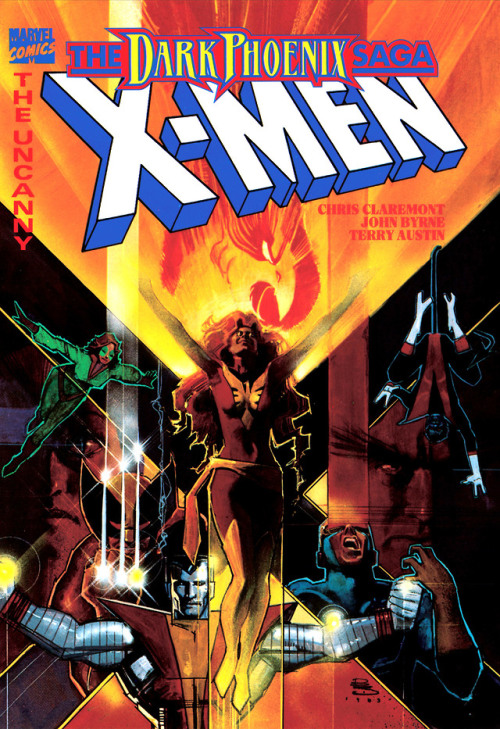

X-Men: The Dark Phoenix Saga
Író: Chris Claremont Kiadás: 1980-1981
Chris Claremont által írt 'X-Men: The Dark Phoenix Saga' (1980-1981) a mutáns szuperhősök epikus története, melyben Jean Grey erőteljes pszichikai képességei veszélyes mértékben fejlődnek, és a sötét erővel, a Phoenix-kel való találkozása drámai események láncolatát indítja el, az X-Men csapatát sorskérdések elé állítva
Chris Claremont

Foglalkozása: KépregényíróSzületett:1950
Élet és Munka: Chris Claremont amerikai képregényíró, aki hosszú időn keresztül dolgozott az X-Men sorozaton. Híres Művei: Claremont nevéhez fűződik az "X-Men" sorozat újjáélesztése az 1970-es és 1980-as években, és olyan történetek, mint a "Dark Phoenix Saga" és a "Days of Future Past." Örökség: Claremont a képregények történetmesélésében játszott szerepével és karakterfejlesztéseivel emelkedik ki.